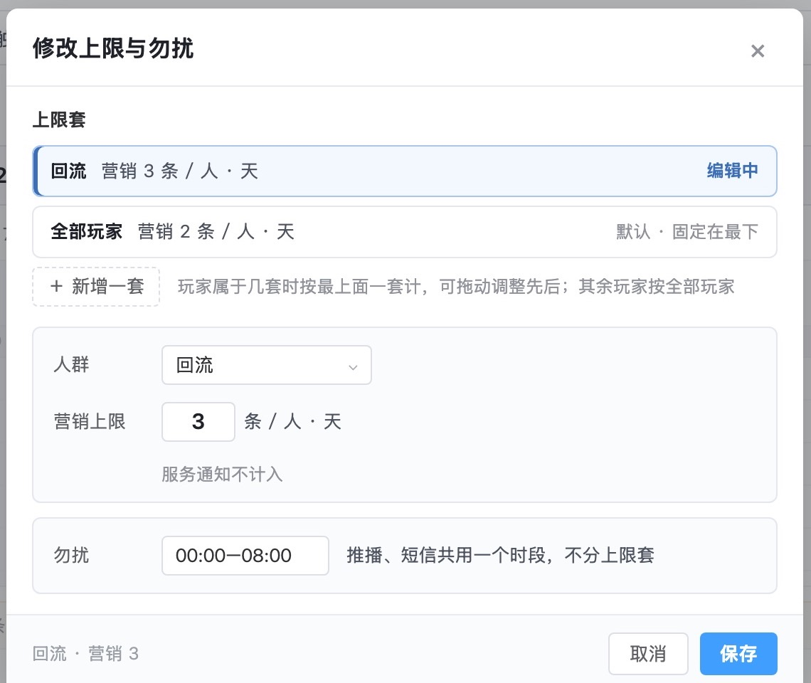
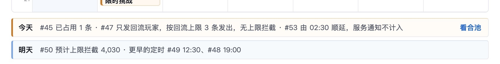
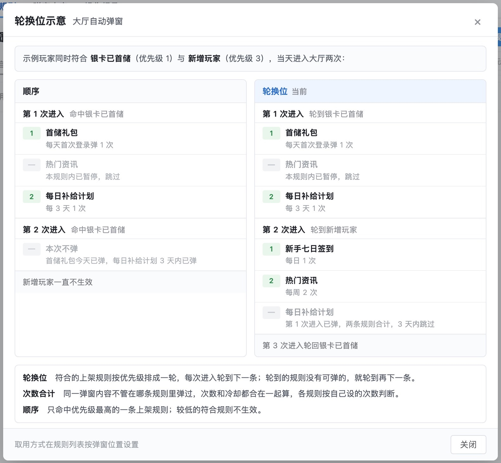
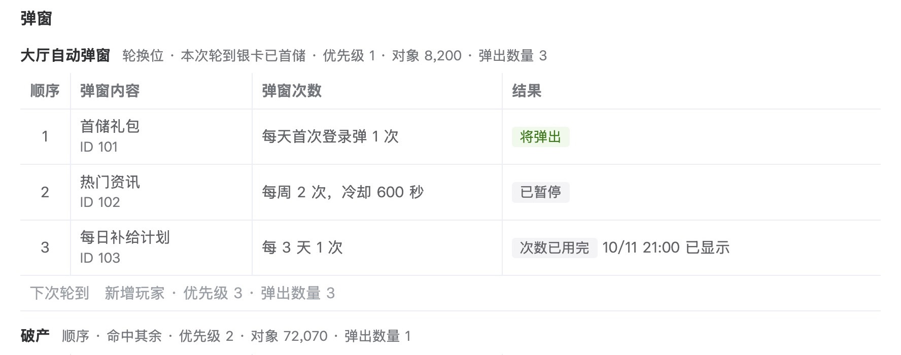
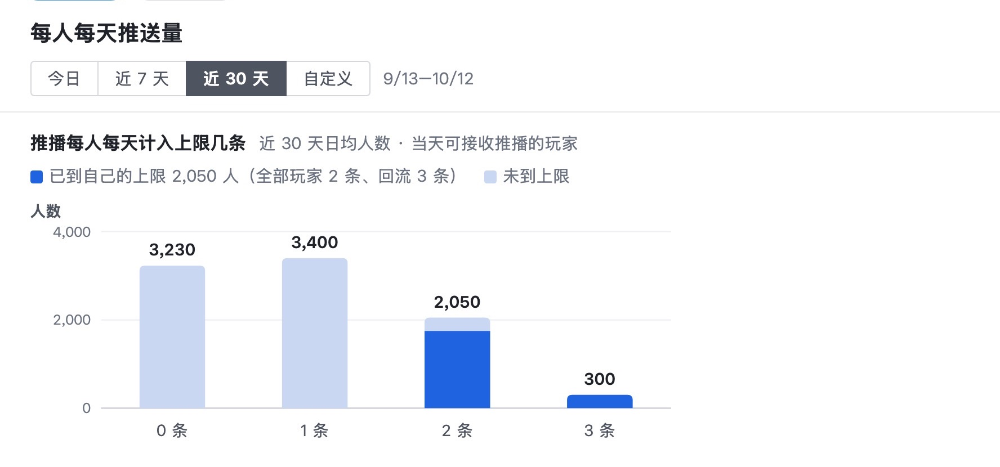

触达系统需求评审版 · 2026-10-27 · 在云端 10/27 定稿上改
评审版已在云端定稿上改好，待你验收：你定的合池和「查看日 + 人群」都保留，12 处问题全部改完
定稿里上限、合池、取用三块的规则和示例数字还和第 8 版一样，审查查出的 12 处都在。这次直接在定稿的源文件上改；我之前在第 8 版下载件上做的第 9 版作废。
12处
审查查出的问题全部改完；另外补了 3 处同类问题
15张图
在定稿源文件上改后重截；其余 20 张是定稿原图
01改完的样子：新加的两块都能从图上看懂
上限按人群分多套，玩家属于几套时按最上面一套算
- 「全部玩家」那套固定在最下，其余玩家都按它算。
- 勿扰从回流那套的编辑框里移出，单独一栏，推播、短信共用。

第 1 页 · 修改上限与勿扰
合池仍按「查看日 + 人群」看；人群里有两套上限时，结果按套分两列
- 按全部玩家看时，里面回流玩家上限 3 条、其余玩家 2 条，一列「占用 n/上限」写不准，所以每套一列。
- #47 只发回流，是回流玩家的第 3 条，照常发出；被拦截的是两套都已满后触发的 #44。
- 日历、定时列表、合池、业务规则，以及开屏和停止确认背后的日历，都不再写「#47 上限拦截 85」。

第 1 页 · 日历下方「今天」一行
轮换位按规则文字重画：每次进大厅轮到一条规则；同一个弹窗内容在几条规则里合计次数
- 示例玩家换成同时符合银卡已首储、新增玩家的人。原示例是回流加潜在流失，但潜在流失的标签排除了回流玩家，两条规则碰不到同一个人。
- 第 2 次进入轮到新增玩家；每日补给计划已在银卡已首储那条弹过，3 天内跳过，不会重复弹。

第 4 页 · 点「轮换示意」后
弹窗列表每个位置都显示取用方式
大厅是轮换位，破产等三个位置是顺序。列表首图、调整优先级、悬停、破产几张都加了这一行，单独那张「取用方式」列表图删掉了。
玩家查询按轮换位写：本次轮到哪条，下次轮到哪条
客服照这页回答，不会再说新增玩家规则不生效；破产写明用的是顺序。

第 10 页 · 弹窗一段
每人每天推送量的横轴画到 3 条，「到上限」按每人自己那套算

第 9 页 · 深色为已到自己的上限：全部玩家 2 条、回流 3 条
0212 处怎么改的
| 页 | 审查查出的问题 | 改成 |
|---|
| 1 | 必须玩家同时属于两套上限时用哪套，没写 | 按列表从上往下第一套算，可拖动调整；「全部玩家」固定在最下。图上和规则里都写了 |
| 1 | 必须#47 按新规则能发出，四处仍写「上限拦截约 85 人」 | 都改为按回流上限 3 条发出；拦截的例子换成 #44 |
| 4 | 必须轮换示意图和规则文字是两种做法 | 按规则文字重画：每次进入轮到一条规则 |
| 4 | 必须同一弹窗内容跨规则重复计次 | 次数和冷却按玩家和弹窗内容合计，各规则按自己设的次数判断；写进「取用」「规则内容」两节和研发改动 |
| 10 | 必须玩家查询还按顺序画 | 大厅写「轮换位 · 本次轮到银卡已首储」，下一行「下次轮到 新增玩家」 |
| 4 | 应该列表首图等没有取用方式，单独那张列表像重复；编辑页摘要缺取用方式 | 取用方式画进 4 张列表图，删掉单独那张；编辑页和拖动未保存页的摘要加「取用方式 轮换位」 |
| 1 | 应该勿扰画在回流那套的编辑框里 | 移出编辑框，单独一栏 |
| 9 | 应该分布图横轴只到 2 条 | 画到 3 条，深色为到自己的上限；图注和规则同步改 |
| 3 | 应该短信有没有多套上限，没写 | 写明只有一套：每人每天 1 条，不分人群，不另开合池 |
| 1、4 | 应该研发要做的改动缺新加的几项 | 第 1 页补按人群分套、合池弹层；第 4 页补取用方式、按玩家记住轮到哪条、跨规则合计；迁移后各位置默认为顺序 |
| 1 | 文字「上限档」「本档」与「上限套」混用 | 统一叫「上限套」。「合池」是你定的叫法，保留 |
| 1、4 | 文字和上一版比的话、绘制说明 | 「无时间范围」「不含合池」「两事不放同一界面」「本原型演示」「为示例条目」「同层，位置级」「旧行为」等都删掉，规则只写现在是什么 |
03另外补的 3 处同类问题
- 轮换示例的玩家不成立：潜在流失的标签排除了回流玩家，回流和潜在流失碰不到同一个人。已换成银卡已首储加新增玩家，和玩家查询的示例玩家一致。
- 开屏和停止确认背后的日历：这两张背后的日历也写着 #47 拦截 85，和日历页一起改了。
- 第 8 页按位次统计：「位次按命中规则的弹出顺序」改为「按本次命中或轮到的规则」，轮换位下也适用。
04你在定稿里定的，全部照旧
- 叫法「合池」；合池从日历今天一行的「看合池」进，用查看日 + 人群筛选；上限与合池分两个入口。
- 「修改」里改多套上限和勿扰，不设时间范围；开屏是推播日历。
- 取用方式按弹窗位置设，轮换位、顺序二选一。
第 9 版里我把合池改成了「名额占用」、按上限套看，和你的定案冲突，这次都改回了。第 9 版的文件已从项目文件夹移走，以这份为准。
05上传云端时要处理的两件事
- 字体：本机没有云端用的思源黑体，这 15 张图是苹方字体，和其余 20 张字形略有不同。上传后在云端重截这 15 张就统一了，命令写在交接说明里。
- 图表脚本只能用来生成第 9 页：定稿里数据概览、位置数据、单条规则三页是生成后手改过的，跑全部会把手改盖掉。交接说明里写了只跑第 9 页的命令。